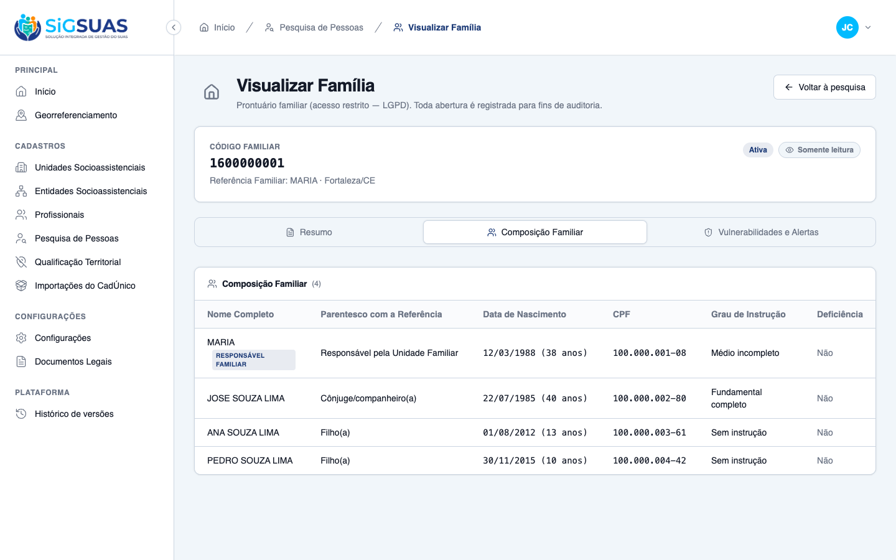
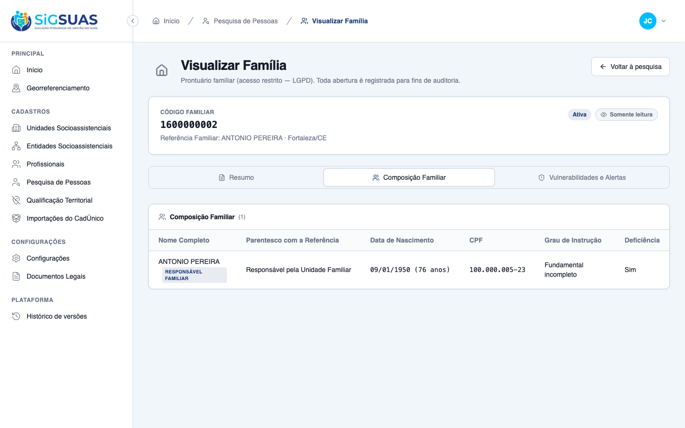

1 Critério de Aceite (CA02) verificado como PARCIAL (◑): evidência de UI ao vivo (navegador) somada à cobertura automatizada de backend. A aba Composição Familiar exibe uma tabela read-only com uma linha por integrante ATIVO — Referência Familiar na primeira linha (ordenada no backend) — com as colunas exigidas pela RN04: Nome Completo, Parentesco com a Referência, Data de Nascimento (idade derivada no backend), CPF ABERTO e formatado (RN01), Grau de Instrução e Deficiência (Sim/Não). Suítes automatizadas: Vitest 3/3 (ComposicaoFamiliarTab) e Pest 14/14 (FamilyDetailsTest, inclui a composição completa e o shape esparso). Resultado geral: ATENDIDO.
| CA | Critério | Status |
|---|---|---|
| CA02 | Leitura de integrantes cadastrados (tabela de membros: nome, parentesco, CPF, nascimento, grau de instrução e deficiência Sim/Não, em formato de leitura) | ATENDIDO · navegador + automatizado |
Critério (Gherkin): Dado que estou na tela de detalhes da família, Quando clico na aba "Composição Familiar", Então o sistema exibe a tabela de membros listando o nome de cada dependente da família, o grau de parentesco com a referência, CPF, nascimento, grau de instrução e se possui deficiência (Sim ou Não) em formato de leitura.
Como foi testado: 1) Login como coordenador (Master, CPF 15543849079) → organização PMM. 2) Abrir a rota da HU: /app/cadastros/familias/9fb588c6-…?tab=composicao. 3) Abrir uma família com integrante com deficiência (baedf637-…) para evidenciar o marcador Sim. O acesso dispara a auditoria silenciosa LGPD no backend (RN05).


PASS Tests\Feature\Api\Client\FamilyDetailsTest ✓ it denies the base operator without the restricted permission (CA05… 0.51s ✓ it grants the operator with the family_viewer role and audits silen… 0.06s ✓ it lets the Master open the record via role bypass, without the res… 0.05s ✓ it blocks immediately when the professional is inactivated, even ke… 0.05s ✓ it blocks on the request right after the role is revoked, keeping t… 0.06s ✓ it returns 404 (not 403) for a family of another tenant (CA08 9760… 0.06s ✓ it does not let a grant in Tenant A open records in Tenant B (CA-ex… 0.06s ✓ it wires the dedicated family_viewer role in the seeder: level 25,… 0.04s ✓ it keeps the restricted permission out of the base roles after perm… 1.08s ✓ it lists family_viewer as assignable by the Master (listAssignable… 0.04s ✓ it returns the enriched record blocks: responsible, address with do… 0.07s ✓ it projects only the ACTIVE vulnerability codes, in canonical order… 0.07s ✓ it lists the full active composition: kinship, age, cpf and educati… 0.06s ✓ it keeps a stable shape for a sparse family: empty vulnerabilities,… 0.05s Tests: 14 passed (101 assertions) Duration: 2.62s